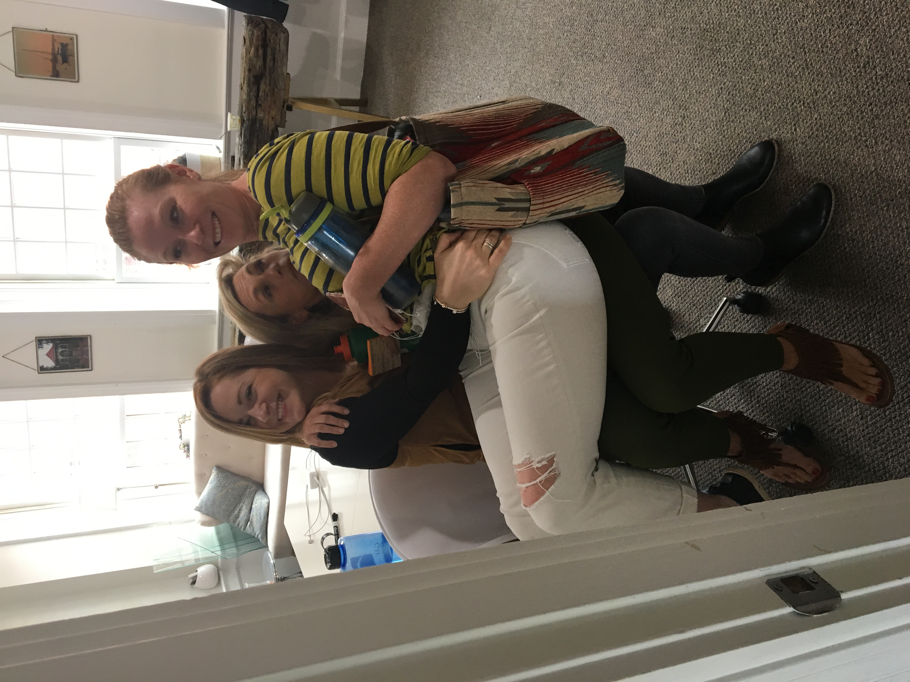

For the Longest time I wanted to be an engineer, until my sophomore year of highschool.
My sophomore year I started DECA which is a business competition that involves a written test and a roleplay.
I learned that I loved business and more specifically marketing. Im still on the fence about what I want to minor in however.
My senior year I did an internship for an online marketing agency, I never had an interest in computer science until my internship.
I learned a lot about SEO and the traffic a website gets form various sources and it may cause me to get my minor in computer science
My internship also taught me that not all workspaces are serious and always down to business and it taught me that I wanted to work in a goofey work place.
 HREF="HTML.Skiing.html"> Previous page